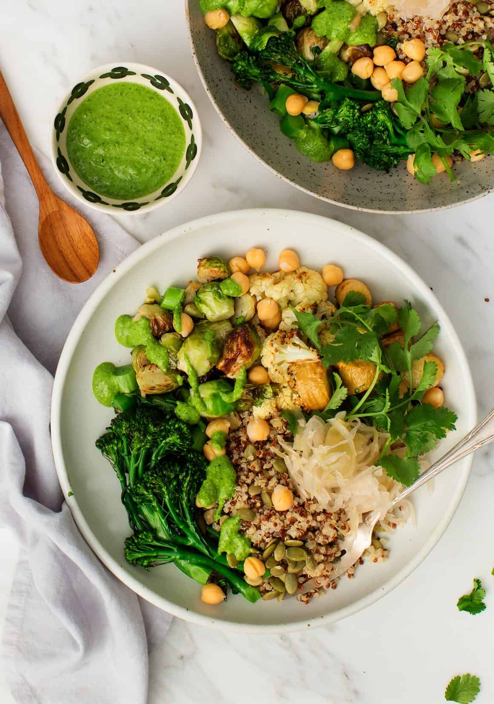

The Little Kitchen
A family food blog with easy, well tasted, family approved recipes!
Lunch Ideas

- Healthy Lunch Wraps
- Best Egg Salad
- Veggie Grain Bowl

Ingredients :
- ½ cup pepitas (or shelled raw pistachios)
- 2 small garlic cloves
- 1 packed cup chopped kale
- 1 packed cup cilantro, more for garnish
- ¼ cup fresh lemon juice
- ½ teaspoon sea salt
- freshly ground black pepper
- ½ cup extra-virgin olive oil
- ½ cup water
- ½ teaspoon maple syrup or honey
- 2 parsnips, chopped into ½ inch pieces
- florets from ½ cauliflower
- ½ bunch broccolini
- 1½ cups halved Brussels sprouts
Instructions :
- Preheat the oven to 425°F and line 2 baking sheets with parchment paper.
- First, make the quinoa. Add the rinsed quinoa and water to a medium pot. Bring it to a boil, cover, reduce the heat, and simmer for 15 minutes. Remove from the heat and let it sit, covered, for 10 more minutes. Fluff with a fork. This will yield about 3 cups; I used a heaping ½ cup per bowl.
- Next, make the sauce. Combine the pepitas, garlic, kale, cilantro lemon juice, sea salt, pepper, olive oil, water, and maple syrup or honey in a blender and blend until smooth.
- Then, roast the vegetables. Place the parsnips, Brussels sprouts, and cauliflower on one large baking sheet. Place the broccolini on the second baking sheet. Drizzle the vegetables with olive oil and pinches of salt and pepper, toss to coat, then spread evenly onto the sheets. Roast the parsnips/Brussels sprouts/cauliflower 20 to 25 minutes or until golden brown around the edges. Roast the broccolini for 10 to 12 minute or until tender. When cool to the touch, chop up the broccolini stems.
- Assemble bowls with a scoop of quinoa, the roasted vegetables, about ¼ cup chickpeas, and a scoop of sauerkraut and top with pepitas. Drizzle with the sauce. Season to taste with additional salt and pepper, if desired, and serve. I assembled these components into 2 bowls (although the whole recipe will make 4) and saved the leftovers for tomorrow’s dinner - stay tuned!
- Store the extra sauce, quinoa, and remaining chickpeas in the fridge.
- Sesame Soba Noodles